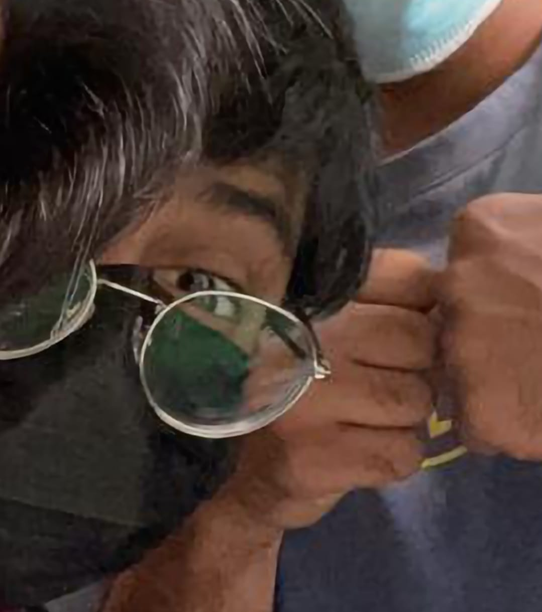

<!DOCTYPE html>
<html lang="en">
    <link rel="preconnect" href="https://fonts.googleapis.com">
	<link rel="preconnect" href="https://fonts.gstatic.com" crossorigin>
	<link href="https://fonts.googleapis.com/css2?family=Roboto:wght@300&display=swap" rel="stylesheet">
	<link href="https://fonts.googleapis.com/css2?family=Press+Start+2P&display=swap" rel="stylesheet">
	<link href="https://fonts.googleapis.com/css2?family=Source+Code+Pro&display=swap" rel="stylesheet">
	<link href="https://fonts.googleapis.com/css2?family=Space+Mono&display=swap" rel="stylesheet">
    <head>
        <meta charset="UTF-8">
        <link href="styles/default.css" rel="stylesheet" type="text/css">
        <title>ITIS3135 | Nihal Mohammed Noice Monkee | Home </title>
    </head>
    <header>
        <h1>Nihal Mohammed ITIS 3135</h1>
        <nav>
            <a href="index.html"> Home </a>
            ||
            <a href="introduction.html">Introduction</a>
            ||
            Contact ||
            <a href="forms.html">Forms</a>
            ||
            <a href="tables.html">Tables</a>
            ||
            <a href="polygons.html">Polygons</a>
            ||
            <a href="https://webpages.uncc.edu/nmohamm8/" target="_blank">UNCC Home</a>
            ||
            <a href="stuff/🐵 !nt3rn3t Sp@c3.htm" target="_blank">🐵 !nt3rn3t Sp@c3</a>
        </nav>
    </header>


    <main>
		<h2>Introduction</h2>
		
		<figure>
			<a href="images/me.jpg">
			    
			</a>
			<figcaption>"This is the only photo of me I have on my phone… for some reason?"</figcaption>
		</figure>
        <ul>
            <li>Personal background: Hello There!
                I was born and raised in Cary North Carolina. 
                Currently a cyber security sophomore.
               .</li>
            <li class="dbody">Professional: Worked as a developer for some projects (mostly related to Minecraft & Terraira Mods/Plugins). I also make and sell discord bots.</li>
            <li>Academic background: Currently working on Bachelor’s Degree in Computer Science, planning on also doing a minor in film </li>
            <li>Background in the subject: I have been into computers from a young age and have been on track for CS since 3rd grade.
                I took HTML and CSS classes a long time ago and want not a fan of it but hope that this class will change my mind.</li>
            <li>Primary Computer Platform: A Lenovo Legion 5 with Window 10</li>
            <li>Courses I'm in & Why:
                <ul>
                    <li>ITIS 3135 - Web Apps Development - I have always wanted to make a website but also, but it is a requirement.</li>
                    <li>ITIS 3200 - Intro to Info Secruity & Privacy - interested, but also requirement                    </li>
                    <li>ITSC 2175 - Logic and Algorithms - Requirement                    </li>
                    <li>LBST 2301 - Critical Thinking & Communication - Requirement                    </li>
                    <li>MATH 1242 - Calculus II - Requirement, unfortunately</li>
                </ul>
            </li>
            <li>Funny story or interesting item about yourself to remember you by:
                I love seafood, especially shrimp but I am deathly allergic to it… dont ask me how I know I like it.. 🙂</li>
            <li>I'd also like to share:
                I am a 3D Animator. I like to make short animation about my life and the people around me. I am also a part-time graphic designer (mostly focusing on Content creator’s logos and more)</li>
        </ul>
	
	</main>


<footer>
    <nav>
        <a href="https://webpages.uncc.edu/nmohamm8/" target="_blank">UNCC Home</a>
        ||
        <a href="https://github.com/TheFlyingEnt/" target="_blank">Github</a>
        ||
        <a href="TheFlyingEnt.github.io" target="_blank">Github.io</a>
        ||
        <a href="https://www.freecodecamp.org/nmohamm8-noicemonke" target="_blank">FreeCodeCamp</a>
        ||
        <a href="https://www.codecademy.com/profiles/nmohamm8-noicemonke" target="_blank">CodeAcademy</a>
        ||
        <a href="https://www.linkedin.com/in/nmohammed2/" target="_blank">LinkedIn</a>
        ||
    </nav>
    <br>Designed by EntWorks Design © 1984...
    .
    <p>
        <a href="https://validator.w3.org/check?uri=referer">
            
        </a>

        <a href="https://jigsaw.w3.org/css-validator/check/referer">
             
        </a>

    </p>
</footer>
</html>